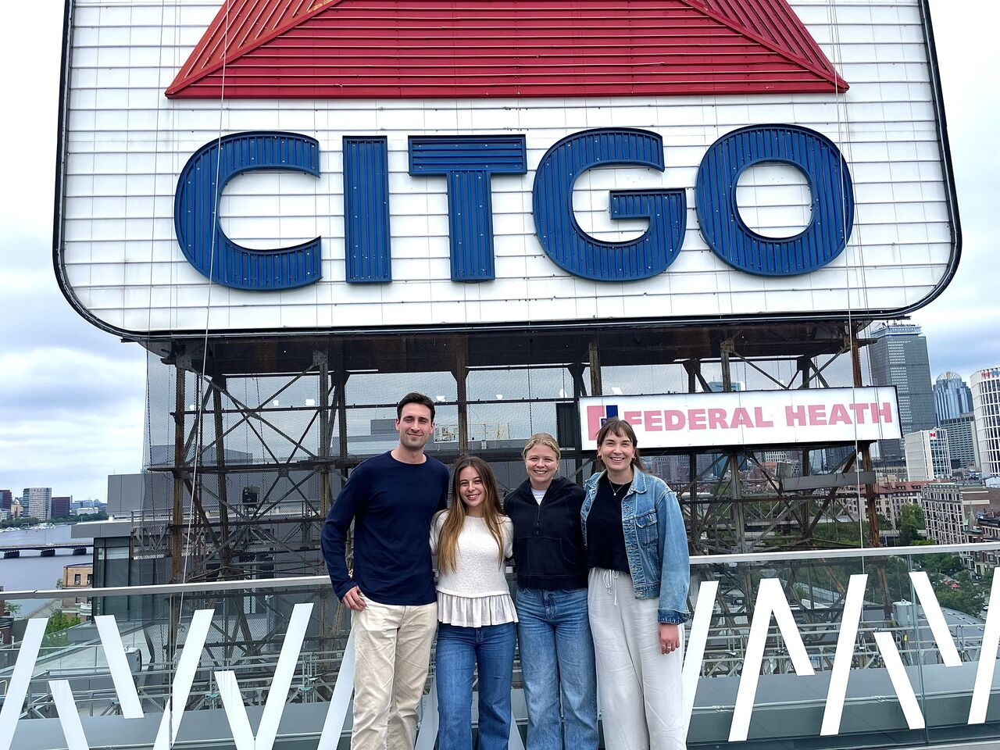
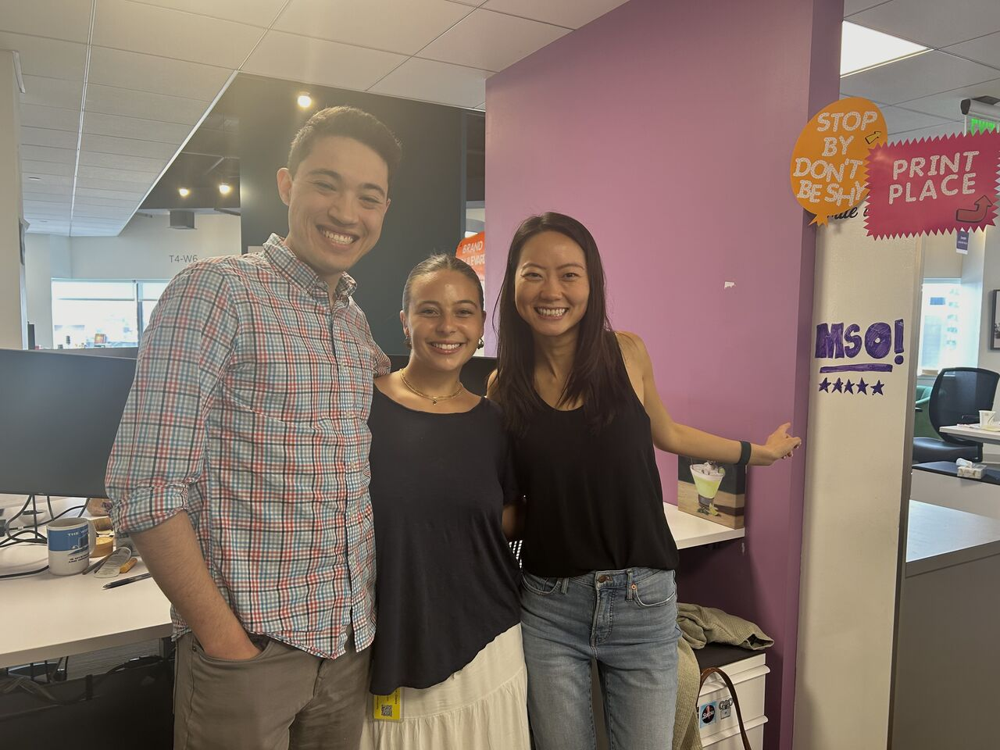

My Professional Experience
Throughout my time at Northeastern University, I've had the opportunity to explore my interests in business, technology, and data analytics through several internships and co-ops. These experiences have helped me develop technical skills, understand how different companies operate, and discover my passion for building data-driven products.
PayPal - Product Management Intern
During the summer of 2026, I worked as a Product Management Intern on PayPal's AI Transformation team in San Jose, California. I contributed to the development of SightGlass, a merchant intelligence platform designed to help teams monitor merchant performance. One of my main projects was developing a near-real-time anomaly detection feature to identify unusual changes in business-critical metrics. This experience strengthened my ability to work with engineers, translate user needs into product requirements, and build solutions to complex problems.
WHOOP - Product Analytics Co-op
In 2025, I worked on WHOOP's Growth team in Boston. My role focused on using data to understand user behavior, improve website conversion rates, and support product decisions. I conducted funnel analyses, evaluated A/B tests, and developed dashboards to monitor important business metrics. I also had the opportunity to contribute to the launch of WHOOP 5.0. This experience showed me how small, data-driven product improvements can create meaningful long-term business impact.
Wayfair - Strategy & Operations Co-op
At Wayfair, I worked in marketing analytics and strategy and operations. My responsibilities included automating advertising cost reporting, analyzing marketing performance, and supporting business decision-making through data. Working with large datasets helped me improve my analytical skills and develop a better understanding of how companies measure performance across different business channels.
My Technical Skills
- Python for data analysis and visualization
- SQL for querying and analyzing data
- Data visualization
- A/B testing and experimentation
My Experience Gallery
PayPal

WHOOP

Wayfair
How Competitive Are APM Programs?
As an aspiring product manager, I'm particularly interested in Associate Product Manager (APM) programs. These programs offer recent graduates the opportunity to develop product management skills at leading technology companies. Google's APM program is especially competitive. Historical estimates from 2023 suggest that approximately 8,000 candidates applied annually, with only 40-45 accepted. I wanted to visualize just how selective this process can be.
8,000
Applicants
40-45
Accepted
~0.5%
Acceptance Rate
Each dot represents approximately 40 applicants. The yellow dot represents accepted candidates. Source: Business Insider (2023) . Figures are historical estimates.